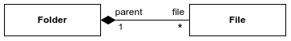

UML:类图
定义
类图（Class Diagram）是描述类、接口、协同以及他们之间关系的图，用来显示系统中这些概念的静态结构。类图也是其它图的基础，我们可以在类图的基础上，使用状态图、协作图、组件图和配置图等。
作用
类图（Class Diagram）的的作用，通常表现在以下几个方面：
- 显示系统结构。
- 展示对象之间的关系。
- 支持代码生成。
- 显示设计决策和支持系统重构。
构成
在UML中，使用矩形描述类。下图展示了类图的三种不同表示形式。
一个类通常由名称（Name）、属性（Attribute）和操作（Operation/Methods）构成。
- 名称（Name）：位于矩形的顶部，必需。通常用粗体表示，抽象类名称用斜体字粗体，接口则需在上方加上
<<interface>>。 - 属性（Attribute）：位于矩形的中部，非必需。以
可见性 属性名:类型的形式表示。 - 操作（Operation/Methods）：位于矩形的底部，非必需。以
方法名(参数列表):返回类型的形式表示。
可见性（Visibility）用于控制该类或属性被类的外部成员的可访问性。主要有以下四种情况：
- +：公有（Public），其它类可以访问。
- -：私有（Private），不能被其它类访问（默认为私有）。
- #：保护（Protected），只能被本类及其派生类访问。
- ~：包内可见(Package)，可以被本包中的其它类访问。
关系（Relationship）
泛化关系（Inheritance / Generalization）
泛化关系其实就是父子类之间的继承关系，表示一般与特殊的关系，指定子类如何特殊化父类的特征和行为。
在UML类图中，用带空心三角箭头的实线来表示泛化关系，箭头从子类指向父类。
public abstract class Shape { ... } public class Square extends Shape { ... } public class Triangle extends Shape { ... } public class Rectangle extends Shape { ... }
实现关系（Realization）
实现关系就是接口和实现类之间的关系。类实现了接口中的抽象方法。
在UML类图中，用带空心三角箭头的虚线来表示实现关系，箭头从实现类指向接口。
public interface IDrawable { void draw(); } public class Shape implements IDrawable { public void draw(){ ... } }
关联关系（Association）
关联关系是用一条直线表示的，它描述不同类的对象之间的结构关系。 关联关系一般用来定义对象之间静态的、天然的结构， 通常与运行状态无关，一般由常识等因素决定的。
上图展示了 Professor 和 Book 之间的关联关系 Wrote 。
public class Professor { private List<Book> books; public void setBooks(List<Book> books) { this.books = books; } ... } public class Book { private List<Professor> authors; public void setAuthor(List<Professor> authors) { this.authors = authors; } ... }
关联关系涉及以下几个概念：
- 可导航性（Navigability）
- 多重性（Multiplicity）
可导航性 （Navigability）
- 导航端的箭头表示导航方向。
- 导航端的差号表示不可导航。
- 未标记箭头或差号的导航端，表示可导航。
下图展示了关联关系可导航性的不同示例：
- 第1张图：A 可导航至 B，同时 B 也可导航至A 。
- 第2张图：C、D 互相不可导航 。
- 第3张图：箭头一般出现在单向的导航性关联中，E、F 未明确指定导航，表示互相可导航 。
- 第4张图：G 可导航至 H , 但是 H 不可导航至 G 。
- 第5张图：I 可导航至 J ，但是 J 不可导航至 I 。
public class A { private List<B> b; public void setB(List<B> b) { this.b = b; } ... } public class B { private List<A> a; public void setA(List<A> a){ this.a = a; } ... } public class C { ... } public class D { ... } public class E { private List<F> f; public void setF(List<F> f){ this.f = f; } ... } public class F { private List<E> e; public void setE(List<E> e) { this.e = e; } } public class G { private List<H> h; public void setG(List<H> h) { this.h = h; } ... } public class H { ... } public class I { private List<J> j; public void setG(List<J> j) { this.j = j; } ... } public class J { ... }
多重性（Multiplicity）
| 表示方法 | 说明 |
|---|---|
| 1..1 | 表示另一个类的一个对象只与该类的一个对象有关系 |
| 0..* | 表示另一个类的一个对象与该类的零个或多个对象有关系 |
| 1..* | 表示另一个类的一个对象与该类的一个或多个对象有关系 |
| 0..1 | 表示另一个类的一个对象没有或只与该类的一个对象有关系 |
| m..n | 表示另一个类的一个对象与该类的最少m,最多n个对象有关系 |
参见“可导航性”示例图。
聚合关系（Aggregation）
聚合关系是关联关系的一种，表示一种弱的“拥有”关系，即 has-a 的关系，体现的是A对象可以包含B对象，但B对象不是A对象的一部分。
在UML类图中，用带空心菱形的实线来表示聚合关系，菱形指向整体。
与组合关系不同的是，整体和部分不是强依赖的，成员也可以脱离整体而存在，即使整体不存在了，部分仍然存在。例如， 部门撤销了，人员不会消失，他们依然存在。
public class Department { ... } public class Staff { ... }
组合关系（Composition）
组合关系也是关联关系的一种，是一种比聚合关系还要强的关系：
- 它是整体和部分（Whole/Part）之间的关系，部分对象不能脱离整体对象而单独存在。
- 部分对象只能属于一个整体对象。
- 整体对象删除时，部分对象也随之删除。
在UML类图中，用带实心菱形的实线来表示组合关系，菱形指向整体。

目录可以包含多个文件，同时一个文件只能属于一个目录。如果目录被删除，那么它所包含的文件也会同时被删除。
public class Folder { private List<File> files; ... } public class File { private Folder parent; ... }
依赖关系（Dependency）
依赖关系是一种使用关系，表示某个类依赖于另外一个类，通常表现为，某个类的方法的参数使用了另外一个类的对象。
在UML类图中，依赖关系用带箭头的虚线表示，箭头从使用类指向被依赖的类。
在最终代码中，依赖关系体现为类构造方法及类方法的传入参数，箭头的指向为调用关系。
public class UserController { private IUserService userService; public UserController(IUserService userService) { this.userService = userService; } ... } public interface IUserService { ... }
参考资料
https://www.omg.org/spec/UML/2.5/PDF
https://sparxsystems.com/resources/tutorials/uml2/class-diagram.html
https://www.visual-paradigm.com/guide/uml-unified-modeling-language/uml-class-diagram-tutorial/
https://www.uml-diagrams.org/class-diagrams-overview.html